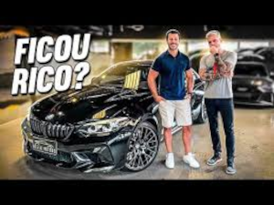

Uma história que começou há oito anos. Lucas trabalhava como consultor no mercado financeiro e a empresa precisava de um profissional expert em redes sociais, o escolhido foi Filipe que tinha uma agência de publicidade, especializada justamente em redes sociais. Na época, Lucas tinha uma página no Facebook, onde compartilhava conteúdos inéditos e detalhados de limpeza de carros. “O Filipe foi trabalhar comigo e vendo a minha página, se propôs a me ajudar. A partir dali nós criamos a Auto Super”, recorda-se Lucas.
De 12 amigos no Facebook, a Auto Super foi ganhando cada vez mais novos seguidores. “A Auto Super foi o primeiro portal de compartilhamento de notícias que atingia 3 milhões de pessoas por semana. E começamos a ter problemas, pois não tínhamos o direito de compartilhar matérias. Para resolver isso, nesse meio tempo, nós saímos da empresa em que trabalhávamos e publicávamos conteúdos só como Auto Super, 24 horas por dia, de hora em hora, todos os dias da semana”, conta Filipe.
O conteúdo era produzido na garagem do pai de Filipe, mostrando o que eles faziam em seus próprios carros. “Arrumei uma câmara emprestada, comprei o tripé e começamos a gravar o nosso próprio conteúdo. Foi a partir daí que existiu a Auto Super como ela é hoje. Foi um divisor de águas, passamos de um portal de notícias para um canal criador de conteúdo”, diz Filipe. O passo seguinte foi migrar do Facebook para o YouTube. Texto retirado do site Balcão Automotivo.
Lucas se aventurando no mundo das corridas profissionais a bordo de uma Mercedes C63 Amg Bi-Turbo.
Volkswagem Gol totalmente modificado e preparado para ser rápido.
Uma série de videos testando carros de auto valor, os famosos carros de rico.
O retorno de um carro lendário na hstória da auto super.